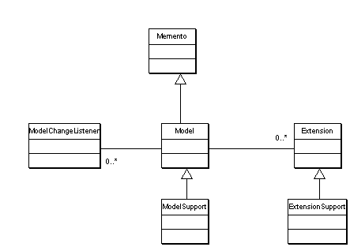

Defines core interfaces and classes.
Overview
A {@link Model} provides the minimum functionality that is
required for the application to work. A {@link Extension}
is an extension to a model that provides additional, optional
functionality. A Model may be queried if it supports
a specific Extension. This also supports to follow the
Interface Segregation Principle
In JPivot an OLAP result is a Model because its
functionality is required to display a table or chart. Navigations
are optional Extensions hat may be supported by some OLAP
server but not necessary by all of them.
Class Diagram

Support Classes
{@link ModelFactory}, {@link ModelSupport} and {@link ExtensionSupport}
are default implementations that may be used to derive from.